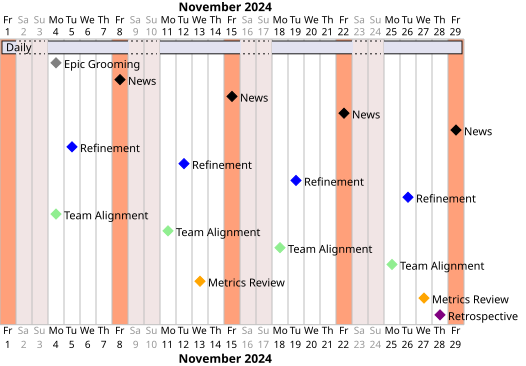
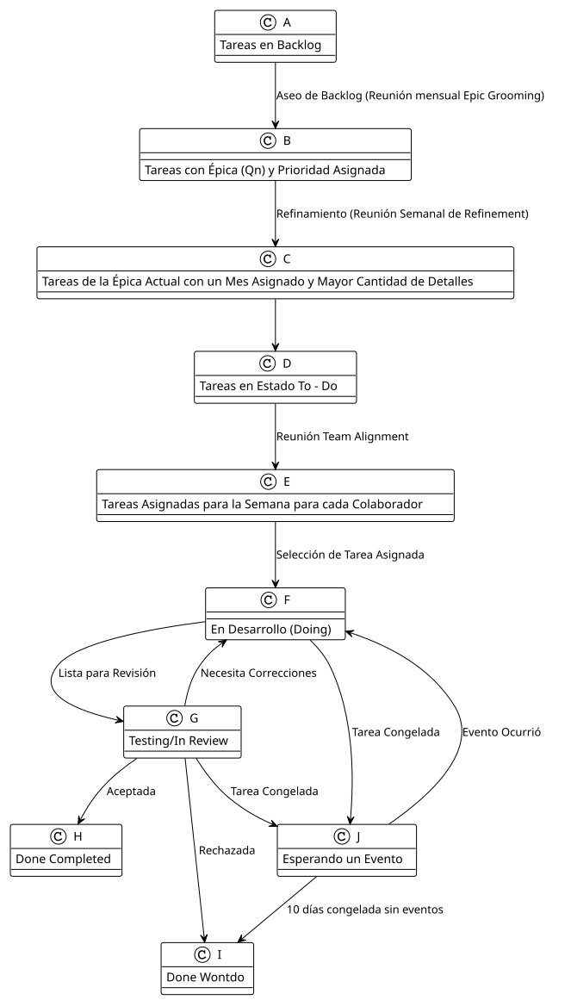

Way of Work
Es importante definir la forma de trabajar de un equipo y organización. En específico se recomienda fundamentarse en el flujo continuo para mejorar el desempeño de los equipos, permitiendo una entrega de valor constante.
En la siguiente carta gantt se puede apreciar la organización de los distintos hitos en un mes.

Horarios Laborales
La jornada laboral no debe exceder las 40 horas semanales en total y entre 8 a 10 horas por día como máximo. Las labores se deben realizar en los siguientes horarios:
-
Lunes a Jueves: 9:30 AM - 18:00 PM (Hora de Almuerzo 13:00 - 14:00 PM).
-
Viernes: 9:30 AM - 13:00 PM.
-
Zona Horaria: Hora de Santiago, Chile (UTC - 3).
-
Nota: Las horas laborales es recomendable que se ajuste a cada zona horaria del colaborador (9 a 18 de cada país u zona horaria), siempre y cuando el colaborador tenga al menos 5 horas de solapamiento con America/Santiago para la coordinación con miembros de otras zonas horarias. Es decir, que hay un margen de al menos 3 horas de diferencia. Por lo que algunas zonas horarias que pueden ser compatibles son todas las que estén entre el rango entre UTC-0 a UTC-6.
Trabajo Remoto
Gracias a una buena coordinación de zonas horarias y herramientas de comunicación asíncronas como Email, Zoom, Slack, Teams, Telegram, Meet, Signal u otro. El trabajo remoto es totalmente posible y recomendado. Obligar a las personas asistir a una oficina es un sin sentido retrógrado y limitante en una época de comunicación via internet para labores relacionadas a proyectos de software. Por lo que las alternativas "híbridas" (obligar asistir a la oficina un día a la semana o mes) solo son un gasto de tiempo y dinero para tanto colaboradores como la empresa.
La empresa puede destinar un bono para permitir facilitar el trabajo remoto que cubra gastos de internet o arriendo de espacios de coworking si el colaborador desea ir a un lugar físico distinto a su hogar.
Es muy poco probable que una empresa pueda lograr un entorno personalizado para cada necesidad de cada colaborador, por lo que el dinero que se ahorra en no pagar oficinas para "trabajo" estandarizadas, puede destinarlo a realizar actividades presenciales esporádicas (opcionales) o invertirlas en mejorar la calidad de vida de sus colaboradores (gym, salud, muebles ergonómicos) o facilitar equipos tecnológicos actualizados.
Sherpa
Existe un rol de "Sherpa" que se encarga de monitorear los sistemas y resolver problemas en horarios extraordinarios. Los cuales deben ser adecuadamente compensados según acuerdo entre empleador y Sherpa. Referencia: Algunas empresas pagan un bono de 80 USD por semana de sherpaje. La semana es distribuida entre un equipo de 4 personas. El rol de Sherpa es necesario para brindar un aseguramiento de la calidad de las soluciones, además de que puede asistir para resolver dudas o problemas de todos los sistemas que esté monitoreando. El Sherpa necesariamente debe ser de un miembro del equipo técnico capacitado para levantar los sistemas si estos fallan.
Semana Laboral
La semana laboral es de lunes a viernes. Los sábados, domingos y festivos sólo podrán ser asignados a una labor de Sherpa para abordar situaciones de emergencia.
Días Viernes
Los viernes no está permitido enviar cambios a producción (salvo excepciones autorizadas), esto con el fin de evitar “sorpresas” durante el fin de semana donde hay menor capacidad de respuesta. Si en la semana se da el caso de un feriado del día viernes. No se podrá pasar a producción el día jueves. Es decir, el congelamiento de los pasos a producción depende de la proximidad del día hábil siguiente. Los días viernes se otorga la facilidad de salir temprano para permitir un mejor descanso de los colaboradores, así como brindar flexibilidad para realizar trámites como visitas al médico u otros menesteres. Esto permite una mejor organización de los calendarios ya que los colaboradores pedirán menor cantidad de días de ausencia justificada dentro de la semana, lo cual puede afectar al flujo del equipo.
Días Feriados Nacionales
Se respetarán los días feriados nacionales del país de cada colaborador. Ya que es una oportunidad para reunirse con familiares y amigos que normalmente no se tiene tiempo en un día tradicional. Esto permite mejorar la moral y la calidad de vida de los colaboradores.
Para evitar conflictos en los calendarios, la lista de feriados debe ser considerada en la calendarización respectiva y ser de público conocimiento por los miembros del equipo. Solamente las personas que habiten dentro del país podrán acceder a estos feriados. Como cualquier día feriado, se considera como un día trabajado. Si es necesario que el colaborador trabaje ese día de forma extraordinaria, se debe compensar como horas extras y coordinar previamente con el equipo, exceptuando casos de feriados “irrenunciables”.
Días Feriados Globales
Adicionalmente a los feriados nacionales se consideran los feriados de Año Nuevo (31 de Diciembre al 1 de Enero) y Navidad (24 al 25 de Diciembre) como feriados irrenunciables y globales para toda la empresa.
Días Feriados de la Empresa
La empresa puede definir fechas específicas como feriados globales según estime conveniente. Por ejemplo, tomar de referencia los feriados de Estados Unidos y también sumarlos a los feriados globales. O realizar actividades recreativas como viajes y similares que permitan mejorar la moral y calidad de vida de los colaboradores. Esto se debe comunicar apropiadamente a los miembros del equipo para que estén sincronizados sus calendarios.
Días de Saldo
Existe un máximo de 2 días al mes de “saldo” en el que un colaborador puede solicitar para realizar trámites, descanso mental u otros menesteres. Estos días se consideran como trabajados. Estos pueden ser solicitados como “solo mañana”, “solo tarde” o “día completo”. Es decir, el colaborador puede solicitar hasta 4 porciones de días de saldo al mes. Estos días deben ser autorizados por el líder del equipo, según acuerdo común con otros miembros del equipo y deben ser solicitados con apropiado tiempo de antelación. No son acumulables y tienen que ser solicitados explícitamente por el colaborador.
Día de Cumpleaños
El cumpleaños de cada trabajador es premiado con un día de descanso especial. El colaborador puede utilizar este día para descansar o preparar su celebración con amigos y familiares. Este día es añadido como un día de saldo adicional durante el mes de cumpleaños (para evitar posibles días de cumpleaños que caigan en fin de semana o feriados). La empresa también puede realizar algún regalo adicional como una tarjeta de prepago para alguna tienda en línea u otro detalle, aunque este detalle adicional es opcional y suplementario al día de saldo especial.
Días de Vacaciones
Por cada seis meses de trabajo desde el inicio de su contratación, el colaborador tiene derecho a 15 días laborales (3 semanas o 21 días calendario) de vacaciones remuneradas. Estos solo pueden llegar a un máximo de 30 días de vacaciones acumuladas. Las vacaciones pueden ser solicitadas en el periodo que el colaborador estime conveniente y según común acuerdo con el equipo, correctamente coordinados con al menos un mes de antelación. Las vacaciones tienen una solicitud mínima de 10 días (2 semanas). El colaborador al llegar a 30 días de vacaciones acumulados (12 meses trabajados) debe obligatoriamente tomar vacaciones al siguiente inicio de mes de mínimo 10 días. En un mismo equipo no puede haber más de dos colaboradores en el mismo periodo de vacaciones, o una cantidad que afecte el flujo de trabajo.
En los días de vacaciones la empresa se compromete a no interrumpir al colaborador con tareas o solicitudes relacionadas al trabajo. En el caso que esto ocurriese se añade un día adicional de vacaciones a sus días acumulados.
En el caso de que un colaborador sea desvinculado antes de ocupar todas sus vacaciones pendientes, estos días deben ser considerados como trabajados en su finiquito, también se debe considerar un monto adicional de un mes de sueldo por año trabajado en el caso de la desvinculación (este monto adicional no aplica si el colaborador renuncia voluntariamente).
Días por Maternidad, Paternidad o Situación Médica
La empresa respetará las leyes nacionales del país de cada colaborador para los días que corresponden a licencias médicas, maternidad o paternidad. Queda a jurisdicción de la empresa si desea añadir días remunerados adicionales para maternidad o paternidad a lo establecido nacionalmente.
Excepciones
En casos excepcionales, se puede utilizar los horarios de Viernes de 14 a 18, los cuales no serán considerados como horas extras. Aunque debe ser debidamente justificado y coordinado con el equipo esta determinación. En casos aún más raros en que se debe superar el tiempo de jornada laboral tradicional de 8 horas diarias, se considerará como horas extras y se debe compensar según acuerdo con el empleado. Referencia: Si una persona supera las 8 horas laborales diarias, al día siguiente se le otorga la mañana completa o el día completo libre, dependiendo de la cantidad de horas utilizadas después de la jornada normal, más de 2 horas extras se considera como “mañana libre”, más de 4 horas extras se considera el “día completo libre”. Estos son días de saldo extra. Estas consideraciones solo aplican si la persona no cumple el rol de sherpa.
Flujo de Entrega Continua
La entrega continua (CD) es una colección de muchas prácticas recomendadas de organización y metodología ágil. Con la CD, una organización se centra en la creación de un proceso de publicación de software sencillo y automatizado. La pieza central de este proceso de publicación es un ciclo de feedback iterativo. El ciclo de feedback gira en torno a la entrega de software al usuario final lo más rápido posible, aprendiendo de la experiencia práctica e incorporando ese feedback en la siguiente publicación (Atlassian, 2025).
Los siguientes hitos son los recomendados para lograr el flujo de entrega continua. Además de algunas herramientas de apoyo a dichos procesos.
Kanban
Kanban es un marco de trabajo muy popular a la hora de implementar un desarrollo de software ágil y de DevOps. Requiere una comunicación en tiempo real sobre la capacidad y una total transparencia del trabajo. Los elementos de trabajo se representan visualmente en un tablero de kanban, lo que permite a los miembros del equipo ver el estado de cada uno en cualquier momento. (Atlassian, 2025).
Los tableros recomendados son:
-
Backlog: Tareas sin prioridad (bajo, normal, alto, crítico) y sin procesar (añadir detalles), del tipo investigaciones (spikes), fallos (bugs), nuevas características (features), documentación (docs) o mejoras (refactoring).
-
Refinados: Tareas con prioridad ya procesadas (mayor cantidad de detalles), pero sin asignar una épica o persona responsable.
-
Por hacer (To-Do): Tareas pendientes que fueron asignadas a una épica, pero sin persona responsable.
-
En Desarrollo (Doing): Tareas en To-Do que fueron asignadas a una persona responsable dentro de una épica y dentro de un mes específico.
-
Congeladas (Freeze): Tareas que debieron ser pausadas debido alguna emergencia o que requieren esperar el resultado de otra tarea. Se pausan para evitar afectar las métricas del equipo. Como alternativa a un nuevo tablero, también pueden ser marcadas con una bandera (flagged) y un comentario para la trazabilidad del ciclo de vida. Una vez descongeladas las tareas pueden pasar a Doing o Done (si es que no se continuará con la tarea).
-
En Revisión y Pruebas (Testing/In Review): Tareas después de ser implementadas, pasan a pruebas para ser aceptadas. Si no son aceptadas pasan a estado Doing o Freeze. Si son aceptadas pasan a estado Done.
-
Terminadas (Done): La tarea se ha entregado y aceptado. Este estado es final, si se descubren correcciones posteriores debe ser creada una nueva tarea que hace referencia a la anterior. Este estado puede tener categorías como: aceptado, wontfix, rechazado, reemplazado.
Prioridad de Tareas
-
Bajo: La tarea no es prioritaria, puede ser asignada en cualquier momento según estime el equipo de desarrollo.
-
Normal: La tarea debe ser realizada dentro de este año Q1 al Q4 (12 meses).
-
Alto: La tarea debe ser realizada en el cuatrimestre actual (3 meses).
-
Crítico: La tarea debe ser realizada en el mes actual (1 mes).
Tipos de Tareas
-
Spike: La tarea es una investigación para determinar o detallar algo. Normalmente asociados a tareas para descubrir por qué sucede alguna situación, encontrar soluciones técnicas o simplemente una forma de investigación general.
-
Bug: La tarea consiste en reparar un fallo encontrado, corregir un comportamiento erróneo, problemas de seguridad o cualquier reparación necesaria que se ha detectado durante el uso y funcionamiento del sistema.
-
Feature: La tarea consiste en añadir una nueva característica o funcionalidad a la solución. Algo que no existía previamente.
-
Docs: La tarea consiste en la elaboración de documentación tanto técnica como de nivel usuario, puede ser desde la creación de documentos como de la mejora de documentos existentes.
-
Refactoring: La tarea consiste en mejorar el funcionamiento de una característica ya existente. Se diferencia del bug por que el comportamiento se mantiene, por ejemplo mejoras de rendimiento, simplificación del código, reemplazo u eliminación de componentes.
-
Performance: Esta es una subcategoría opcional de refactoring, consiste en tareas relacionadas a mejorar el desempeño y rendimiento de la solución.
-
Tests: La tarea consiste en la elaboración de pruebas o implementación de herramientas de CI/CD o relacionados al aseguramiento de calidad.
Para más detalles se puede consultar el estándar de Conventional Commits.
Categorías de Done
El estado de "Done" o terminado puede tener distintas categorías.
-
Completed: La tarea fue completada exitosamente y cumplió todos los criterios de aceptación.
-
Wontdo: La tarea no fue realizada por alguna razón de negocio o técnica. Normalmente puede ocurrir cuando la tarea es reemplazada por otra, si es que se detectó que la tarea es demasiado grande como para cumplir el tamaño máximo de 2 semanas.
Diagrama de Flujo
El siguiente diagrama de flujo muestra como una tarea comienza su ciclo de vida desde el Backlog, hasta su aceptación o rechazo final. Si una tarea está congelada más de dos semanas (10 días), se recomienda rechazarla y crear una nueva que la reemplace para cuando se tenga el evento que la descongele.
Tareas que se salgan del ciclo de dos semanas deben ser rechazadas y crear una nueva tarea que las reemplace, con una estimación nueva, probablemente su dificultad fue superior a lo previsto y requieran una mayor granularidad.
El principal objetivo es crear una cadencia dentro del equipo donde se pueda conocer y mejorar la velocidad y las estimaciones de dificultad de forma progresiva, predecible y sostenible en el tiempo.

Pasos a producción
Los pasos a producción son importantes. Considerar ventanas de "freeze" donde no se puede enviar a producción. Normalmente cuando se espera un evento importante como fechas claves.
Noticias (News)
Es un evento semanal de máximo 40 minutos donde la empresa comunica a todos los equipos cualquier novedad relevante, por ejemplo nuevos clientes o colaboradores, planes futuros, felicitaciones a los equipos por un proyecto exitoso. Es una instancia opcional pero recomendada. Normalmente agendado para los días viernes por la mañana.
Reunión Diaria (Daily)
Es una reunión diaria donde el equipo comunica el estado general de avance a los interesados y si han encontrado algún bloqueo o se necesita apoyo adicional para completar una tarea. Normalmente es guiada por el Sherpa de la semana preguntando a cada miembro su estado y moviendo las tarjetas de Kanban a su categoría respectiva. Debe durar 15 minutos como máximo (dependiendo de la cantidad de personas dentro del equipo, recomendado máximo 5 personas). Con un máximo de 3 minutos por persona para decir su estado, mayores detalles en cada tarea se deben coordinar en una instancia de reunión aparte. Pasa también tareas del Doing a Testing o Done. Adicionalmente se puede tener una reunión corta de estado de avance al finalizar el día para cualquier eventualidad que lo requiera, siempre y cuando no supere la carga laboral total del equipo.
Aseo de Épica (Epic Grooming)
La Épica (Epic) está separada en cuatro por año. Son metas a cumplir cada tres meses. Q1 (Enero - Marzo), Q2 (Abril - Junio), Q3 (Julio - Septiembre), Q4 (Octubre - Diciembre). El aseo de épica consta de alinear las tareas a realizar para cumplir con los objetivos organizacionales y otras prioridades detectadas durante cada cuatrimestre. El aseo de épica se debe realizar una vez al mes el día lunes (o el primer día hábil del mes) para poder detectar con suficiente tiempo cualquier desviación de cronograma y evitar corrupciones en el alcance. Es una reunión realizada con todo el equipo y debe durar máximo 1 hora. Guiado normalmente por el project manager.
Refinamiento (Refinement)
Se realiza una vez por semana, normalmente el día martes por la mañana. El equipo selecciona tareas del Backlog y las refina (agregar detalles, estimación de dificultad aproximada, analizar posibles interdependencias y determinar si se necesita mayor información para ser realizada) para ser pasados a la lista de tareas refinadas. Además de las tareas del Backlog, el refinamiento también puede ser para priorizar tareas de la lista de tareas refinadas a la lista de tareas por hacer (To-Do) o mejorar el refinamiento de las tareas ya refinadas. También se puede determinar la lista de tareas que no se realizarán por cambio de prioridades del proyecto. El tiempo estimado de esta reunión es de 1 hora. Guiado normalmente por el sherpa semanal de turno o el project manager.
Coordinación del Equipo (Team Alignment)
Realizado una vez por semana los días lunes, reemplaza a la Daily del lunes. Se utiliza para priorizar las tareas asignadas semanalmente por el equipo. Es guiada por el project manager o sherpa de turno. El objetivo es priorizar las tareas del To-Do y pasarlas a Doing o tareas del Testing a Done. También es ideal para coordinar cualquier necesidad de los miembros del equipo como no estar durante algún día de la semana, por ejemplo con días de saldo u otra eventualidad a considerar. La coordinación semanal no debería tomar más de 40 minutos.
Evaluación de Métricas (Metrics Review)
Realizada quincenalmente los días miércoles. Es una oportunidad de revisar las métricas de seguimiento en el equipo para detectar cualquier anomalía o realizar correcciones detectadas en los plazos y cargas laborales acordados. También es una oportunidad de evaluar la moral del equipo y detectar cualquier problema emocional que pudiese afectar al rendimiento general del proyecto. La evaluación no debería tomar más de una hora. Es guiada por el project manager. Responder las preguntas ¿Cómo te sientes?, ¿Qué ha sido lo más difícil hasta ahora?, ¿Qué podríamos hacer para mejorar?, entre otras. La evaluación de métricas también puede ser usada para realizar una entrega parcial o total de los avances presupuestados para el mes.
Retrospectiva (Retrospective)
Realizada el último día jueves hábil del mes. Consiste en evaluar las tareas realizadas durante el mes y determinar si se han cumplido las expectativas tanto de estimaciones, calidad y otras métricas para poder considerar dichos conocimientos en futuras iteraciones. También es una buena oportunidad para gestionar cualquier cambio dentro del way of work establecido, herramientas y necesidades encontradas durante el mes.
Estimación de Entregables
Como se puede apreciar en los hitos y herramientas, existe un plazo mínimo de dos semanas (quincenal) para la revisión de los entregables. Es decir, un entregable no puede tomar más de dos semanas de plazo. Por lo que se debe subdividir si su complejidad es mayor a dos semanas. La serie fibonacci es la recomendada para analizar la dificultad de los entregables: 1, 3, 5, 8.
| Complejidad | Nivel | Comentario |
|---|---|---|
1 |
Bajo |
La tarea puede ser realizada en un día laboral o menos. |
3 |
Normal |
La tarea puede ser realizada en una semana (5 días laborables) o menos. |
5 |
Elevado |
La tarea puede ser realizada en dos semanas (10 días laborables) o menos. |
8 |
Imposible |
La tarea debe subdividirse y refinarse con mayor granularidad. No es posible realizarla dentro de un plazo de dos semanas. |
Se estima que el nivel de dificultad 1 equivale en promedio entre 1 a 5 horas de trabajo reales (un día laboral, descontando una hora de almuerzo y una hora de reuniones calendarizada diaria, y una hora de buffer para cualquier inconveniente presentado). Por lo que un ingeniero capacitado debería poder tomar entre 1 a 2 entregables de complejidad baja por día. Asumiendo que la cantidad de horas totales es 40 horas a la semana, pero 25 horas de trabajo real asignado al avance de las tareas comprometidas. La carga laboral debe considerar las horas de reuniones, las horas de colación y las horas disponibles para el avance de cada tarea.
La siguiente tabla muestra la equivalencia aproximada entre complejidad y horas necesarias para completarla.
Complejidad |
Horas Estimadas |
1 |
1 a 5 horas (1 día) |
3 |
6 a 25 horas (2 a 5 días) |
5 |
26 a 50 horas (6 a 10 días) |
La siguiente tabla muestra las posibles combinaciones de carga laboral para un ingeniero capacitado dentro de una semana de 25 horas reales de trabajo. Considerando los valores máximos de horas disponibles por tarea.
Combinación |
Comentario |
5 entregables nivel 1 |
El ingeniero debe ser capaz de entregar 5 tareas nivel 1, si no logra esto quiere decir que las tareas fueron mal estimadas y eran de un nivel superior. (Total de 25 horas a la semana) |
2 entregables nivel 3 (parcial) |
El ingeniero debería ser capaz de trabajar en dos entregables nivel 3 a la semana, pero uno de ellos será completado parcialmente. (Total de 25 horas a la semana). |
1 entregable nivel 5 (parcial) |
El ingeniero debiese ser capaz de avanzar en una tarea nivel 5, aunque solo un avance parcial por semana. (Total de 25 horas a la semana, por dos). |
1 entregable nivel 3 y 2 entregables nivel 1 |
Asumiendo que el entregable nivel 3 sea menor a 5 días (15 horas), se puede combinar con entregables nivel 1. (10 horas). |
Cambios de Contexto
Un ingeniero del equipo de desarrollo puede trabajar en uno o varios proyectos a la vez (aunque lo ideal es siempre un proyecto a la vez), siempre y cuando la cantidad de esfuerzo no supere el máximo de 25 horas laborales reales en conjunción con todos los proyectos que participa. Sin embargo existe un castigo de tiempo al cambiar el contexto. Es probable que las tareas necesiten de mayor cantidad de horas para ser completadas. Se recomienda no más de uno o dos cambios de contexto al día. Por ejemplo en las mañanas puede avanzar en tareas asignadas al proyecto A y en la tarde solamente a tareas asignadas al proyecto B. O también y según prioridades lunes y martes dedicado al proyecto A y miércoles, jueves dedicado al proyecto B. Todo cambio de contexto debe ser coordinado con antelación en el hito de Team Alignment, no es recomendable realizar un cambio de contexto en una semana ya calendarizada y priorizada, a menos que sea una real emergencia. Todo cambio de contexto debe ser avisado al EM para permitir organizar y priorizar la carga semanal.
Protección de Corrupción del Alcance
Para evitar que el alcance se corrompa, generando retrasos, disminución de la calidad de los entregables, realización de tareas no prioritarias o aumento de costos por retrabajo. Las tareas asignadas deben pasar siempre por el proceso de backlog → refinamiento → todo, lo que permitirá analizar la pertinencia de las tareas, su dificultad y relevancia para la solución. Algunas tareas pueden ser canceladas o modificadas según el equipo de desarrollo, el PO y el EM estimen convenientes antes de que sean asignadas dentro de una épica determinada. Esto quiere decir que la presentación de los cambios solicitados por el cliente o los stakeholders tienen un plazo mínimo de dos semanas para ser presentados un avance de estado en el hito de Metrics Review. Cualquier cambio que requiera una investigación de factibilidad o aprendizaje del uso de una tecnología en específico, debe ser considerado como una tarea del tipo spike que permita realizar dicha investigación.
Roles
Los siguientes roles pueden estar presentes en un equipo de desarrollo. Es recomendable que un equipo de desarrollo tenga como máximo 6 personas (4 devs/ux, 1 PO y 1 EM). Cómo mínimo lo recomendable es 4 personas (3 devs/ux y 1 EM/PO), aunque puede llegar a ser viable (según dificultad del proyecto y tiempo disponible) una cantidad mínima de (1 dev/ux y 1 EM/PO).
Rol |
Descripción |
Responsabilidades |
Product Owner (PO) |
Encargado de comunicación con el cliente. Permite conocer el feedback del cliente y determinar las características que el producto debe tener para satisfacer las exigencias y necesidades del cliente. |
|
Engineer Manager (EM) |
Encargado de interactuar con el Product Owner y dirigir el proyecto. Es un ingeniero capacitado tanto en tecnología como en gestión de proyectos. No participa en la elaboración del producto directamente, pero sí ofrece labores de coordinación, priorización y resolución de conflictos o bloqueos que presente el equipo de trabajo. También es el encargado de entrevistar a posibles candidatos para unirse al equipo de trabajo o solicitar movimientos y cambios de colaboradores dentro del equipo. |
|
Tech Lead (TL) |
Ingeniero principal. Es el ingeniero con mayor experticia y conocimiento de la solución o producto. Junto al Engineer Manager toman decisiones técnicas sobre la arquitectura, diseño y elecciones técnicas sobre el desarrollo de la solución. |
|
Dev Team Member (DEV) |
Ingeniero del equipo de desarrollo. |
|
UI/UX Team Member (UX) |
Diseñador gráfico del equipo de desarrollo. Puede también ser suplido por un miembro del equipo de Dev con principalmente tareas de diseño de interfaces. |
|
Interesados (Stakeholders) |
Los interesados son cualquier otra persona con interés en que el proyecto sea elaborado. La estrategia comunicacional con ellos es a través de reportes escritos y reuniones de estado (metrics review). |
|